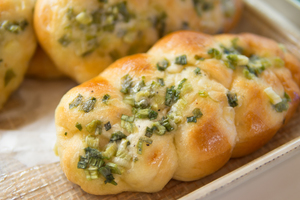

HOT DOG
A twist on the original American dog, ours comes with dog and bun entertwined in an eye-catching design, flavored with Parmesan cheese
HONEY CINNAMON ROLL
Our version of the cinnamon roll is lightly sweetened with honey and filled with cinnamon and raisins.
